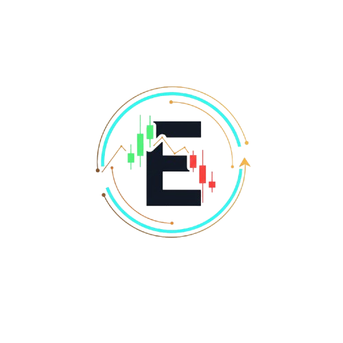

EduardoMindsetPare de ser o 'stop' das instituições. Identifique onde o dinheiro grosso está posicionado no BTC e Ouro com precisão cirúrgica.
OBTER ACESSO AO INDICADORIdentifique instantaneamente os Pontos de Interesse (Points of Interest) onde as baleias deixaram ordens pendentes não executadas.
Diferencie o volume emocional do varejo do volume real institucional. Opere a favor da tendência, não contra ela.
Saiba exatamente quando o movimento perdeu a força. O indicador sinaliza capturas de liquidez em topos e fundos antes da reversão.
Desenvolvi este método após anos observando como o varejo é induzido ao erro. O mapeamento de liquidez não é apenas um indicador, é um GPS que revela as zonas de oferta e demanda reais.
Ao invés de tentar adivinhar para onde o preço vai, nós seguimos o rastro do dinheiro institucional. Se você busca uma vantagem matemática no BTC ou Ouro, você precisa enxergar o que o gráfico comum esconde.